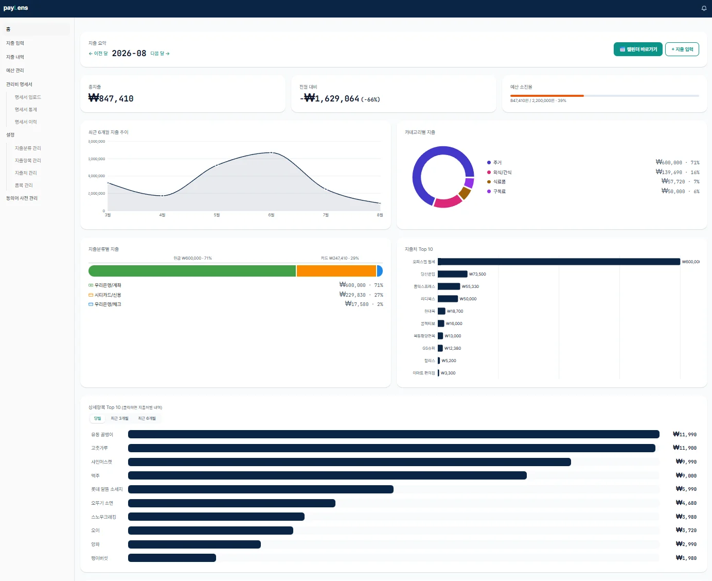

AI 개인 프로젝트
payLens
지출 데이터를 다양한 관점에서 분석하는 개인용 가계부
프로젝트 개요
payLens는 단순히 지출을 기록하는 것을 넘어, 지출의 구조를 다양한 관점에서 분석하기 위해 기획한 개인용 가계부 서비스입니다.
기존 가계부의 카테고리 중심 분류만으로는 결제수단, 지출처, 실제 구매 품목을 구분해 분석하는 데 한계가 있다고 판단했습니다.
이에 지출 데이터를 네 개의 독립적인 기준으로 관리하는 구조를 설계했습니다.
핵심 과제 01
지출 데이터 모델 재구성
지출 1건을 다음 네 가지 관점으로 구분했습니다.
이를 통해 동일한 지출 데이터를 결제수단, 카테고리, 지출처, 품목 단위로 분석할 수 있도록 했습니다.
관련 화면
핵심 과제 02
AI와 협업하는 개발 프로세스 설계
Claude Code를 활용해 제품의 설계부터 구현, 테스트, 배포까지 진행했습니다.
프로젝트 문서를 아키텍처 설계, 기능명세, WBS, 진행현황으로 분리하여 관리했습니다.
- 01 가계부_아키텍처_설계 › 전체 구조도(Mermaid), 지출 4축 데이터 모델, ERD, 로드맵 8장 구성.
- 02 기능명세서_IA › F-코드 기반 기능 명세 + 정보구조(IA), 실제 구현 완료 메뉴 표를 별도로 관리.
- 03 WBS › TASK 단위 세션 추정 + PM 승인 후에만 체크되는 진행 체크리스트.
- 04 진행현황 › WBS.md의 TASK 목록을 체크리스트로 옮긴 진행 현황 문서. TASK 완료 시 PM 확인 후 체크박스만 갱신.
※ 위 설계 문서들은 사후에 정리한 산출물이 아니라, Claude Code와 대화하며 프로젝트 설계를 진행한 원문 그대로입니다.
AI가 여러 작업 세션에 걸쳐 개발하더라도 확정된 요구사항과 현재 진행 상태를 구분할 수 있도록 했으며, 작업 완료 여부는 직접 검토한 후 반영하는 방식으로 관리했습니다.
핵심 과제 03
데이터 성능과 보안 검증
대시보드 통계 조회 성능을 개선하기 위해 Materialized View와 Redis 캐시를 활용했습니다.
실제 실행계획과 응답시간을 측정해 기존 조회 방식 대비 최대 6배의 성능 개선을 확인했습니다.
또한 Supabase RLS 정책을 적용하고 타 사용자 데이터에 접근할 수 없는지 검증하는 테스트를 수행했습니다.

결과
- 1차 제품 개발 및 프로덕션 배포
- 사용자별 데이터 접근통제 검증
회고
AI를 활용하면 기능 구현 속도를 높일 수 있지만, 요구사항과 설계가 불명확하면 잘못된 결과도 빠르게 만들어질 수 있습니다.
따라서 AI와의 협업에서도 문제 정의, 설계 검토, 테스트 기준, 최종 승인 과정이 중요했습니다.
이 프로젝트를 통해 PM이 AI 개발 도구를 활용할 때에도 구현 결과를 검증하고 품질을 책임지는 역할이 필요하다는 점을 경험했습니다.